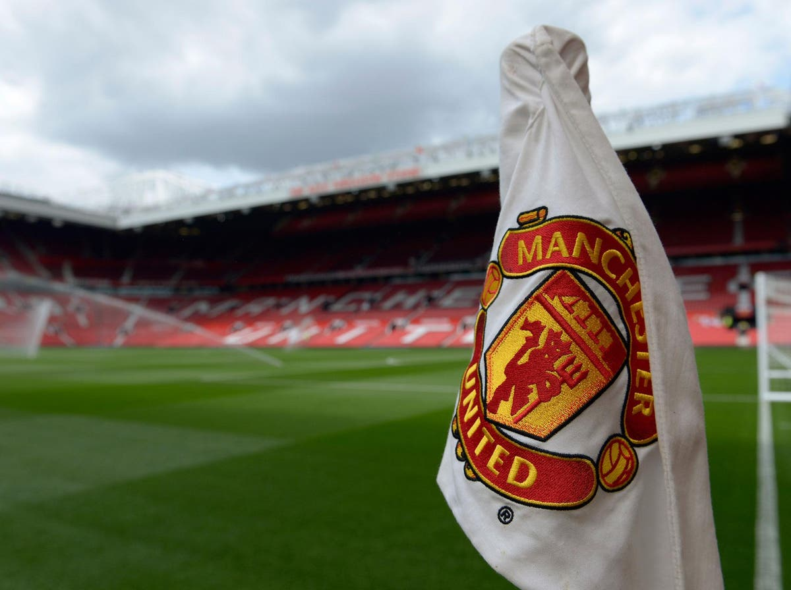

@kristijanmasevski
@kristijanmasevski
Semos JavaScript Academy,soccer player. PM for work inquires or #tag me in your posts.
#semos
#programming
#soccer
Hello,Im Kristijan and i have 20 years.I`m from Kumanovo,Macedonia.Im currently student in Semos JavaScript Academy for next 6-7 months.In high school i study for programming and i love it because of that i choise the Semos Academy to upgrade my skills and after finishing it to work in good company.Also im sport man,i`m playing soccer already for 9 years.Lets say i was semi-professional or professional soccer player at the age of 18 because i was playing first macedonian league for U-18.I was playing for club from my city called Eurosport , i was the capitan.In 3 years we menage to qualify from 3rd league to 2nd and then to the 1st league for u-18.This was first time in club history to qualify in first macedonian league.Because i have 20 years and i cant play anymore for my u-18 team i`m now playing in other club from my city and we are in 3rd league.Last seasson, the first half we have super results and we were 1 or 2nd i dont remember but in the 2nd half of the seasson we start to lose every game somehow, in february i had knee injury and i wasnt able to do anything for 6-7 months.Last month i join gym to start my knee rehab to build the leg muscles again and hopefull i will play soccer again for hobby because im done for going pro in soccer.